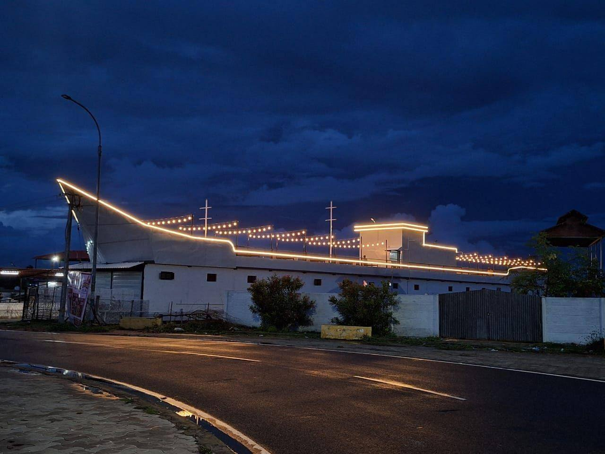

Surulinthan R
Chairman / Mentor Director
About Karai Marina
Karai Marina is designed as a sea-theme destination where families, friends and event guests can connect, dine and celebrate near Karaikal beach.
Karai Marina combines a lively Food Street, rooftop dining experience and open lawn event venue in Karaikal. The destination supports multiple food brands, evening hangouts, family dining, weekend visits and celebration bookings.
Karai Marina brings together beach-side dining, rooftop evenings, open lawn celebrations and family hangouts in Karaikal.

Drone view • Premium ambience
Watch the aerial view of Karai Marina and feel the Food Street, open lawn, rooftop and celebration ambience before you visit.
Directors
Chairman / Mentor Director

Managing Director

Director, Finance & Admin
Sea-theme view, evening lights and relaxing dining space.
Food Street with coffee, chaat, grills, desserts and more.
The Deck and The Grand Lawn for 50 to 500+ guests.